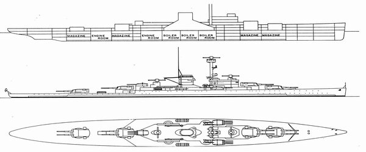

Bismarck

Fegyverzete
A Bismarck fő fegyverzete nyolc darab 38 cm SK C/34 jelzésű 38 cm-es, 52 kaliberhosszúságú gyorstüzelő ágyúból állt, melyeket négy lövegtoronyban helyeztek el, a felépítmények előtt és mögött kettőt-kettőt. A tornyokat az ABC kezdő betűi után jelölték meg, így az elülső kettő az Anton illetve Bruno, a hátulsók a Cäsar és Dora neveket kapták.
A másodlagos tüzérség 12 darab 15 cm-es, 55 kaliberhosszúságú gyorstüzelő ágyúból (15 cm SK C/28), a légvédelmi tüzérség 16 darab 10,5 cm-es Flak 38 légvédelmi ágyúból, valamint 16 darab 3,7 cm-es és 12 darab 2 cm-es (Flak 30 ill. 38) légvédelmi gépágyúból állt. A hajó rendelkezett 4 darab Arado 196 hidroplánnal felderítési és légtérmegfigyelési célból. Ezeket a hajó közepén, keresztben elhelyezett kétvégű katapultról bocsáthatták fel. A Bismarckot három FuMO 23 jelzésű keresőradarral (rádiólokátorral) látták el. Ezeket a fő távolságmérők házaira telepítették, így egy volt a hátsó és kettő az elülső felépítményen (az elülső a parancsnoki torony, a hátulsó fent a főárbóc tornyának tetején).
Tervrajza
Kép Forrása: PT Dockyard
Tervezése
A Bismarck standard vízkiszorítása 41 700 t, teljes terhelés mellett 50 300 t volt. Teljes hosszúsága 251 m, legnagyobb szélessége 36 m és merülése teljes terhelés mellett 9,9 m volt. Testvérhajójával, az átalakításokkal kissé nehezebb Tirpitz-cel Németország legnagyobb hadihajói voltak, nagyobbak minden más európai csatahajónál, leszámítva a brit Vanguardot, melyet viszont már csak a háború után adtak át.[20] E hajó standard vízkiszorítása ugyan nagyobb volt a Bismarck-osztályénál, de teljes terheléssel már könnyebbnek számított. Meghajtásáról három Blohm & Voss gőzturbina és 12 olajtüzelésű Wagner nagynyomású gőzkazán gondoskodott, melyek maximálisan 150 170 LE teljesítmény leadására voltak képesek. Ezzel a teljesítménnyel 30,12 csomós csúcssebességet értek el a próbajáratok során. A hajó hatótávolsága 8870 tmf (16 430 km) volt 19 csomós sebesség mellett.